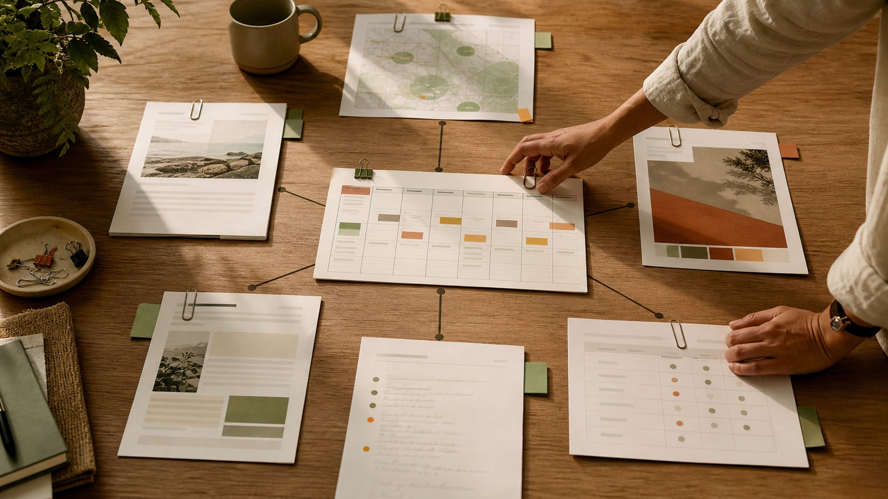
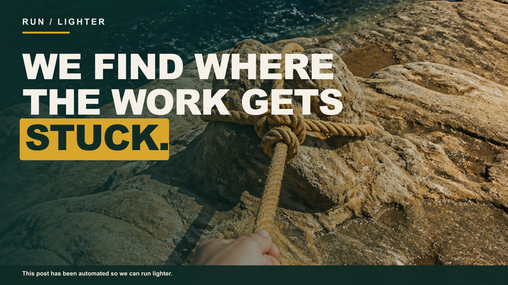
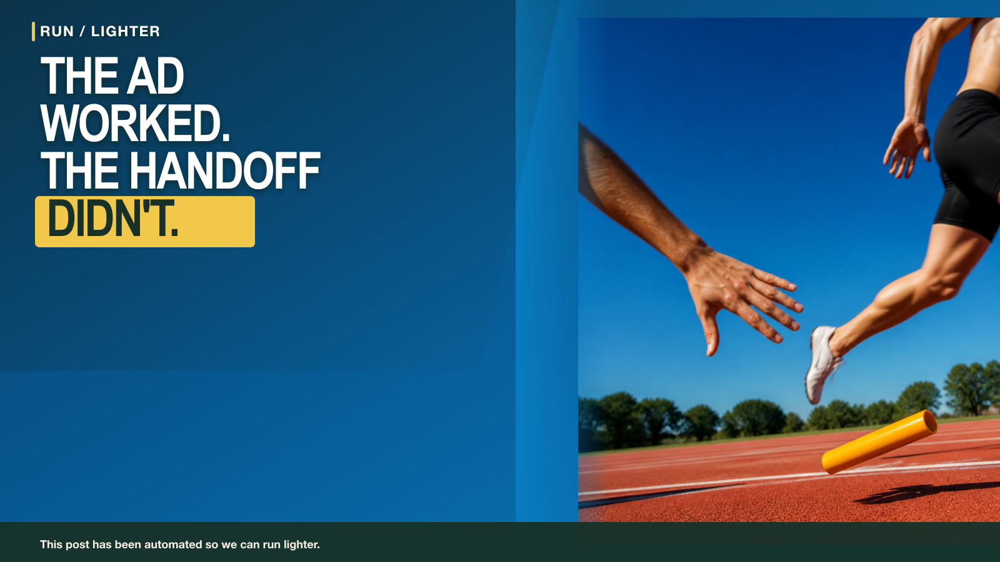
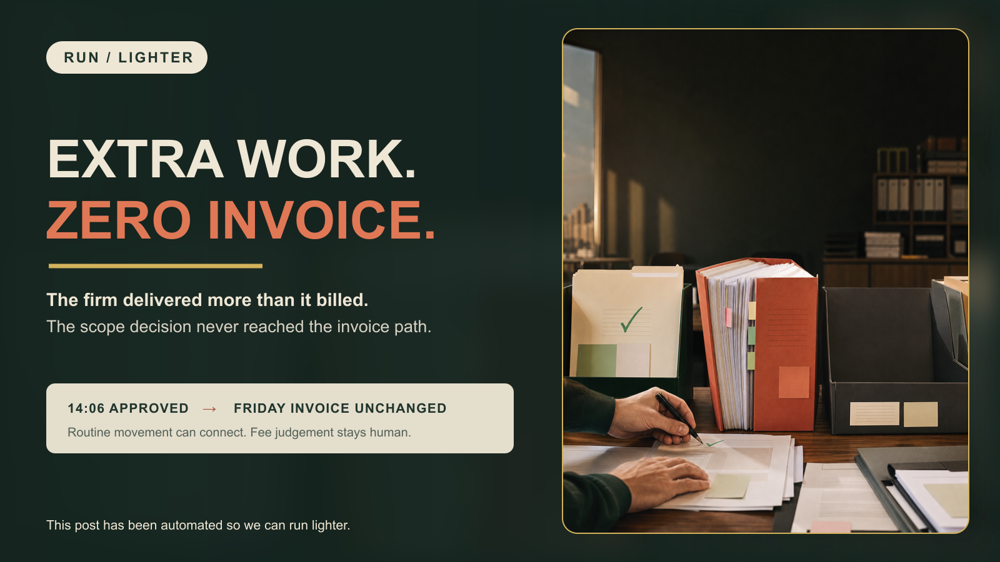

Your business should not need you everywhere.
We improve how growing businesses handle leads, administration and marketing, using practical automation built around the tools and people already there.
On-site in Sydney. Start with one useful business problem.
Two ways to remove operational drag.
Some businesses need cleaner internal systems. Others need somebody to own the repeatable work that turns marketing into real enquiries. Run Lighter can handle either problem, or connect both.
Make the work move without constant chasing.
We map the repeated work inside your business, connect the systems you already use and build reliable workflows around your team.
- Lead capture and follow-up
- Client onboarding and handovers
- Admin and data movement
- Reporting and visibility
Turn priorities into published, measurable work.
We coordinate the repeatable work around campaigns, content, websites and follow-up while your experts retain the message, decisions and relationships.
- Paid acquisition and lead handling
- Website and local search priorities
- Articles, social and email publishing
- Campaign reporting and improvement
Less repetition. Better follow-through.
The goal is not to add more technology. It is to remove the avoidable work between an important event and the person who needs to act.
Faster follow-up
New enquiries, approvals and exceptions reach the right person with enough context to act.
Cleaner operations
Information moves between systems without the same details being copied and checked repeatedly.
Less owner dependence
Routine work follows a clear path while judgement, relationships and accountability stay human.
Start with the business, not the software.
We look at one real workflow, find where it gets stuck and recommend the smallest useful place to begin.
See the work properly
We follow a real enquiry, task or handover through the people and systems involved.
Find the useful intervention
You receive a plain-English view of the bottleneck and the strongest practical opportunity.
Build, prove and improve
If there is a fit, we implement one controlled improvement and expand only when the evidence supports it.
Answers for owners building a lighter business.

What should an external marketing function actually manage?
An accountable external marketing function owns the work between an approved priority and a measurable result: planning, production, approval, publishing, campaigns, follow-up and reporting.
Read article →How do I stop being the bottleneck in my business?
Separate routine approvals from decisions that need judgement so work can move without making the owner the gate for every step.
Read article →How do strata managers stop approval requests disappearing into email?
Give every approval one visible record, decision owner, deadline and exception path so the manager is not rebuilding status from an email chain.
Read article →
What happens during an on-site automation review?
A practical review follows one real workflow through the business, finds where work gets stuck and identifies one sensible place to start.
Read article →
Why do good leads get lost after the ad?
Good leads usually get lost after an ad when nobody owns the handoff from form submission to acknowledgement, routing and human follow-up. A managed lead-generation system gives every step a clear trigger, destination and accountable person.
Read article →
How do accounting firms stop out-of-scope work becoming unpaid work?
A client approves extra work, the team delivers it, but the engagement and invoice still reflect the old scope. Build one controlled scope-to-bill handoff.
Read article →Useful before we speak.
No generic AI package and no need to replace every system. We start with the problem in front of us.
What can Run Lighter actually help with?
Repeated digital work across leads, onboarding, administration, reporting and marketing implementation. The first step is identifying where a better workflow would make a practical difference.
Do we need to replace our existing software?
Usually not. We begin with the tools already in use and look for the cleanest way to connect or improve them.
Is this about replacing staff?
No. The aim is to remove repeated work and missed handovers so people can focus on judgement, customers and the work that needs them.
What happens on the first call?
We discuss one frustrating workflow, establish whether it is repeatable and decide whether an on-site review would be useful. You leave with a practical next step.
How is business information handled?
Access, data movement and human oversight are considered before anything is built. Systems remain under your control and sensitive decisions stay with the responsible person.
Find the first workflow worth fixing.
Tell us where work keeps getting stuck. We will help you identify a practical place to start.